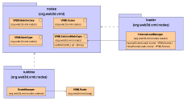
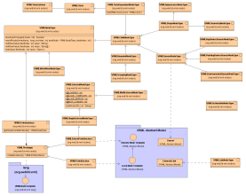

Xj3D VRML Node Package Implementation
Author: Justin Couch
Last updated: $Date: 2002/02/19 15:16:21 $
Revision: $Revision: 1.4 $
Intro
The node package provides abstract representation of the structure of a VRML
scenegraph as shown in the VRML Abstract
data model. These abstract representations allow a particular
implementation to create a legal VRML scene graph without needing to know the
particular node types permitted.
Background
Once we started looking at the VRML code we realised that the current structure
of the code was not going to be suitable for use in a flexible code library.
We wanted to provide the capability to provide whatever implementation of VRML
nodes that we deemed appropriate for the application. For example, a server
may not want to use Java3D for the rendering, instead it would look to provide
a minimal system without a renderer. However, they still wanted to use the
generic parser code that we had written. By tying the entire application to
one particular renderer, we were forcing a particular solutoin and limiting
the options of the codebase.
Motivation
While the latest VRML specification is in the process of defining a
Scene Authoring Interface (SAI), the requirements for
this are way too heavy for the internals of a rendering engine. There is a lot
unneccessary overhead that it imposes on a structure. For example, there is a
lot of munging of data to get and set it from a field using classes. In the
core of a rendering engine, this provides huge overheads that will severely
degrade performance. Therefore, we set about defining a minimalistic API that
allows us to control the structure of the scenegraph and present as minimal
an interface as possible.
As we don't know what the specification will contain now, or in the future, the
other goal in designing this API was to provide a flexible mechanism to
structure the scenegraph. That is, we encourage the creation of generic
interfaces and discourage interfaces that represent a specific node.
Along with the core interfaces representing nodes, we've also provided support
packages that provide some of the common functionality. These are not
required to use the node interfaces, but hopefully they should make an
implementation easier.
Structural Overview
The nodes package provides a single primary package and two sub-packages that
provide support services in a runtime environment. For an application, only
the primary package is needed to represent a scenegraph and it may be used in
either a static or running environment. The sub-packages are designed to
support the node structure if the user wants to run a dynamic scenegraph.
Code Layout
The primary package is the nodes. Within this there are a set of
core interfaces that extend the basic capabilities provided by the
lang package. From this, we then build all of the node
type interfaces in an ordered heirarchy.
Figure 1 presents the basic interfaces and the three packages that provide the
makeup of the nodes VRML package. This is a reduced view of all the interfaces
to provide an overview of how the items interact.

Figure 1: UML Structure diagram of the VRML Node packages
Node Type representations
At the core of VRML system is the node representations. As the abstract data
model shows, there are different classes of nodes within a scene graph. VRML
does not define a linear heirarchy of capabilities. Nodes mix and match
capability sets so that the interfaces for more complex nodes types are usually
a mix of smaller interfaces.
Figure 2 outlines the major types of nodes that we could use to create more
specific node types. At the base, we have the representation of a core node
that derives from the VRMLNode interface in the lang
package. To support the higher level concepts, there are a collection of
interfaces that do not derive from this interface. These should not be used
to define nodes directly, but rather combine their features with the core
heirarchy derived from the VRMLNode interfaces.

Figure 2: UML Structure diagram of the core Node package classes
There are three basic types of node classifications that we can then apply -
normal scene graph structure, secondary capabilities that the node needs or
requires and prototype nodes. When assembling a VRML scene graph at runtime,
the processing code needs to know about these three basic sets of capabilities
as each influences a set of extra post-processing behaviours.
Scene graph Structure
Scene graph structure nodes define the basic organisation of renderable
components. By assembling these pieces, we can have a completely rendered
representation of the scene graph that is provided at time zero. These
represent how we glue nodes together and really form the concrete
representation of the VRML abstract data
model.
Each item in the scene graph is either a grouping node or a leaf node. After
than, the differences are highlighted more by the attributes and any secondary
capabilities a node may have.
Secondary Capabilities
Secondary capabilities are used to defined extra behavioural requirements of
the individual node. For example, does the node define part or all of its
content in a file external to this file. These capabilities are then used to
decide what extra processing a node may need - particularly at runtime after
time zero.
These capabilities are defined as an extra set of methods over the normal node
behaviour and can be applied to any of the core scene graph structure
interfaces. When building a new scene graph after parsing, these capabilities
are separately searched for for every node that is loaded thus allowing any
combination of primary and secondary capabilities to be mixed seamlessly. As
well as the load time checks, runtime code also uses these extra sets of
information. For example, any node marked as Bindable will automatically have
a stack associated with it to operate correctly.
Prototypes
Prototype nodes are given special treatment. The VRML specification defines
these as separate entities than the main file components. The biggest
difference is that these define a template for a node and then we can
create instances of these templates as though they were first class nodes.
Prototypes contain a number of extra interesting problems - they have their
own scene graph data definition as well as name scoping. A further potential
problem is that a prototype's actual declaration may be in another file that
needs loading and so we don't really know whether their declaration makes them
valid in the place where they are being loaded from.
In either case, we need to know about these declarations and treat them with
special care and so they are marked out with extra interfaces.
Scene information
All scene information is held in a single interface called
VRMLScene. This allows access to all the parsed data structures
in whatever form is required. All of the important features of a scene graph
are presented in this scene - the root node, bindables, navigation, prototypes
and more.
Runtime managers
Runtime managers encompass a set of different features that can be used in a
generic way in the runtime environment. These features stay the same regardless
of the low-level renderer used. The advantage of this is that it allows new
renderers to be quickly built without needing implement every aspect, and also
for experimentation by trying different runtime implementations of these
functions without needing to re-code the renderers.
Routing
Route management is one area that we can abstract from the low level rendering
implementation into something that is applicable to all. The route manager is
simply passed a list of nodes and the associated routing information and deals
with the issues required.
Routing is represented by the RouteManager interface. Individual
routing implementations may then extend this to provide the actual processing
of routes. In this way, configurable route mangement systems may be implemented
and tested for comparisons against other implementations, when all else is
considered equal.
Bindables
Bindable nodes have a basic behaviour - only one of them is permitted to be
active in the scene at home. VRML97 had four bindable nodes - Viewpoint,
NavigationInfo, Background and Fog. The VRML200x specification contains a
new form of bindable node - one that we are currently termining
activatable. These acitivatable nodes operate on a similar principle
to bindable nodes but are also missing many of the fields, so management is
much simpler.
Because both forms of nodes have very similar characteristics, our
implementation has combined the management of these nodes into a single class
called BindableNodeManager. This manager is responsible for
maintaining all of the stack principles that are required by the specification.
This frees the basic renderer code of this job. However, the runtime
environment still needs to know when a bindable has changed so that it can
modify the behaviour as appropriate (for example switching between viewpoints).
To deal with this, a listener BindableNodeListener can be
registered with the manager for informing when a new node is now the active
node.
External File management
One major feature of VRML is that scene graph contains many node types that
require information defined outside of the context of the current file. At the
simplest level, this can be an image for a 2D texture. On the most complex it
can be a prototype node declaration.
The file manager has one major task: load the files requested by the various
nodes. Anything on top of this - like file caching is just a feature of a
particular implementation. File loading is represented using the interface
ExternalLoadManager. It also assumes that a caching system may
be available and provides an interface for providing different cache
schemes through the FileCache interface.
A file loader is assumed to be multi-threaded. Code passes the loader a scene
to load and that is the last userland code sees of it. Inside the loader, it
will then process all of the URIs it has extracted from the scene
Runtime Semantics
VRML, being a dynamic environment, has a lot to work with and for, when it
comes to building runtime models. Textures need to be loaded, scripts executed
and more. This section seeks to explain how the general runtime parts of the
system act. Note that it does not talk about a particular rendering
implementation as this is highly effected by how mouse/keyboard input is
captured, and even how collision detection is implemented. Here we just still
to the core, generic runtime items.
Event Model
The event model is all about the propogation of event cascades - detecting
when they will happen and making sure everything executes to completion.
In the case of our event model processor, the basic design focuses on just
the routing/event cascade management. The triggering of this processing is left
to the renderer implementation. That is, it is required to decide if and when
a cascade needs to be run, and then calls our class to do so.
Data structure references
When passing a field through due to route, the assumption is that the incoming
array of data is the correct size for the values. That is, although the array
internally is not necessarily the correct size, the incoming values are.
Receiving a value requires a number of assumptions. Should the receiver just
use the reference, or should it make its own local copy? In order to be
consistent we always.....Fix this.
Dealing with MF fields
MF fields, where they represent 2D data are transmitted as a single,
interleaved 1D array of values internally. Although it is possible to receive
data in the 2D form (especially from a script or EAI action), by convention,
routing will pass around a 1D array. Therefore any node that may have a field
like MFVec3f should always make sure that it accepts both float[]
and float[][] forms for setValue().
The reason for standardising on a 1D array is that it creates the minimal
amount of copying. When parsed from the raw string, they are 1D values, and
most interactions with the Java3D renderer require 1D arrays. It is just
simpler to keep all data in a flat array.
File Loading
File loading requires a standard cache design technique. You want to have some
code that is responsible for reading items from the network, but you also want
to make sure you only items once.
Bindable Nodes
Extending the Code
Runtime
File Loading
Bindable Nodes
References